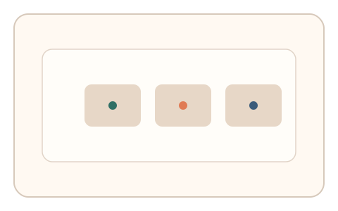
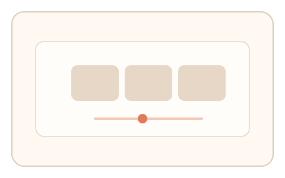

#172
Reverse Brainstorming - Round 3
已扩展
设备层可信度分层
依据设备与浏览器可信度分层验证，低可信触发多信号任务。
概念原文
依据设备/浏览器可信度分层选择验证强度，低可信环境强制多信号验证，高可信环境简化流程。
把模拟器局限转化为风险分层优势，减少正常用户负担。
研究背景
设备指纹与环境特征可提供可信度估计。按层级分配验证强度能降低正常用户负担，同时提升对可疑环境的区分度。
核心机制
- 采集设备/浏览器特征并估计可信度。
- 低可信环境升级为多信号任务。
- 高可信环境使用轻量验证。
- 结合风险策略输出判定。
用户流程
- 步骤 1：系统评估设备可信度。
- 步骤 2：根据可信度选择验证路径。
- 步骤 3：系统输出最终判定。
判定信号
设备指纹可信度
可信度影响验证强度选择。
升级任务行为信号
多信号验证更难伪造。
判定逻辑
高可信可快速通过；低可信需满足多信号阈值。
对抗面
- 伪造设备指纹提升可信度
- 脚本针对轻量验证优化
防御与缓解
- 动态更新指纹特征
- 随机抽检高可信设备
- 多层信号组合判定
可达性与风险
升级任务提供可达性替代通道。
- 指纹误判导致体验不稳
- 过度分层影响公平性
可视化状态

状态 1：可信度分层
设备按可信度分层。

状态 2：路径升级
低可信触发多信号任务。

状态 3：分层判定
按层级输出验证结果。
参考资料
Device fingerprint
说明设备特征与可信度估计。
Risk-based authentication
说明分层验证策略。